Favorites Light


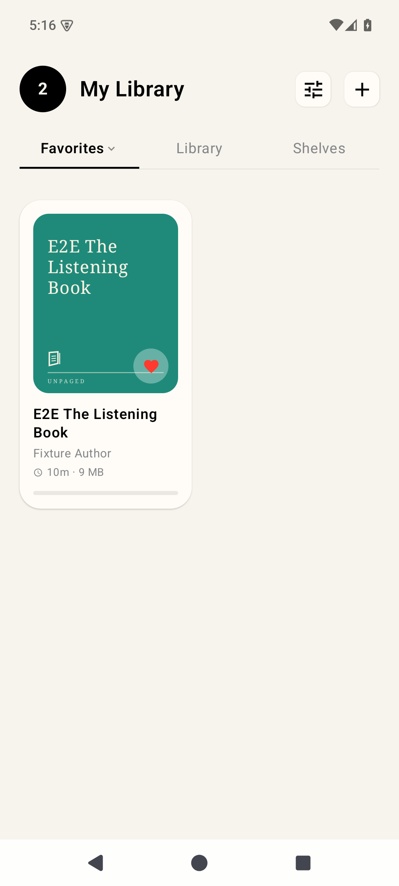
Actual emulator and simulator captures at equal display width. PNG bytes are unchanged; click to inspect full resolution. Matching fixture titles, authors and durations are used. System chrome, fonts and missing Android features remain visible. Slice 1 intentionally omits Plus, Sources, Reset Onboarding, reading activity and the mini player. Shelves is a placeholder awaiting its source slice. The mini-player reference reuses the unloaded Android detail capture to make that boundary visible. Imported Android fixtures have no moments until moment creation is implemented. Settings references include those excluded rows, so section positions differ.
This is a human comparison artifact, not an automated pixel-diff pass. See the adjacent validation document for provenance, fixes and outstanding parity gaps.


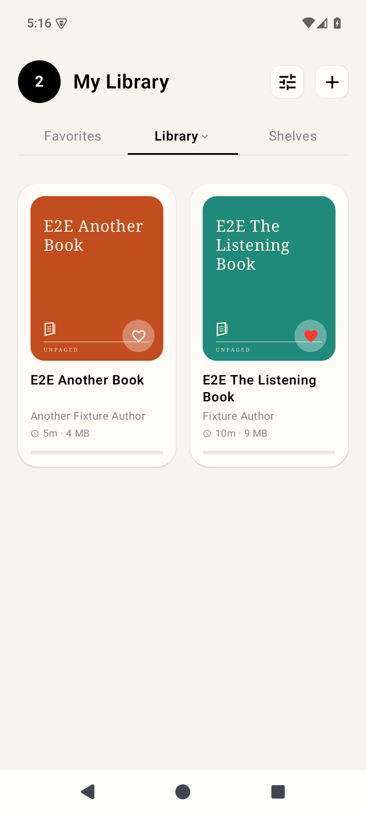


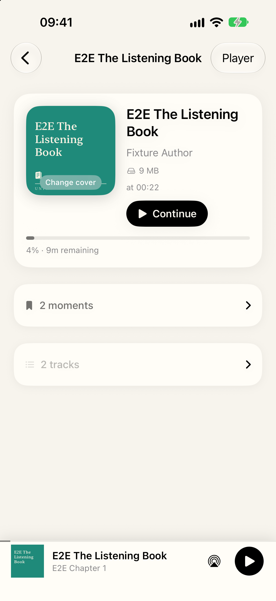
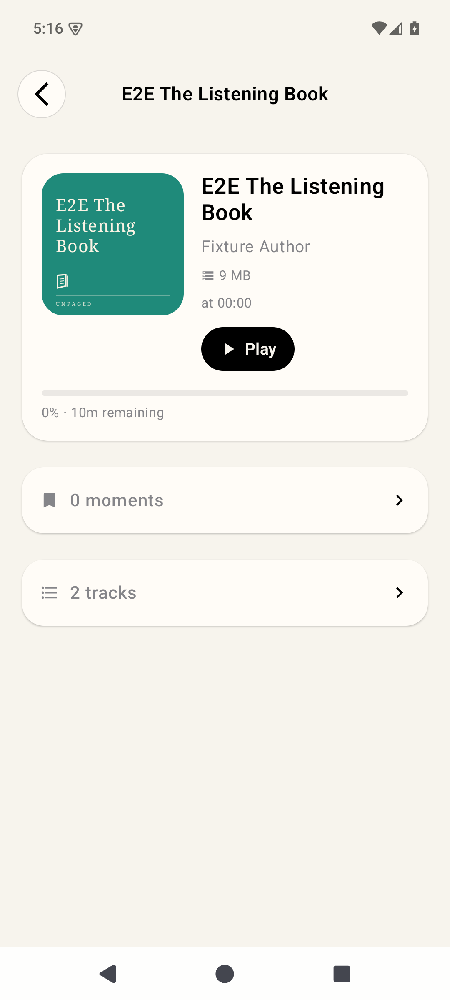
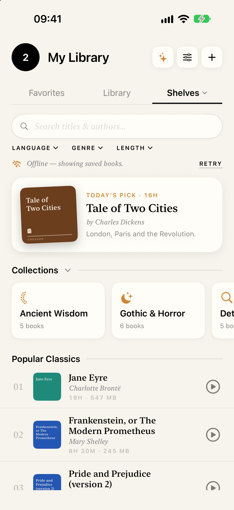
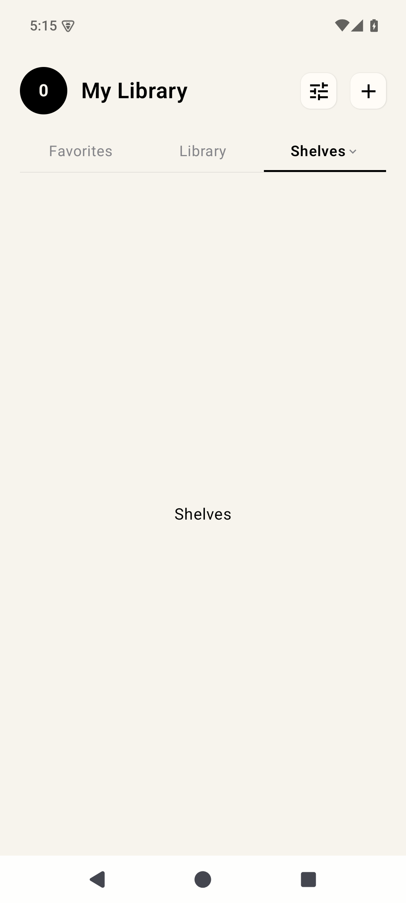
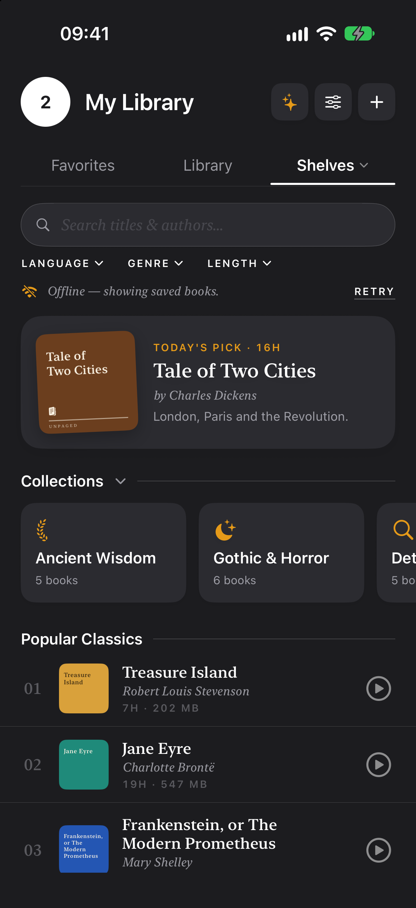
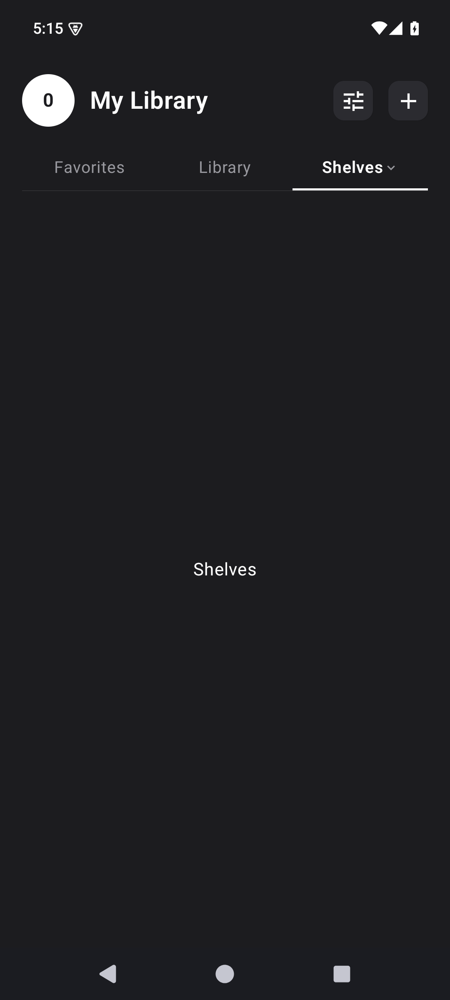
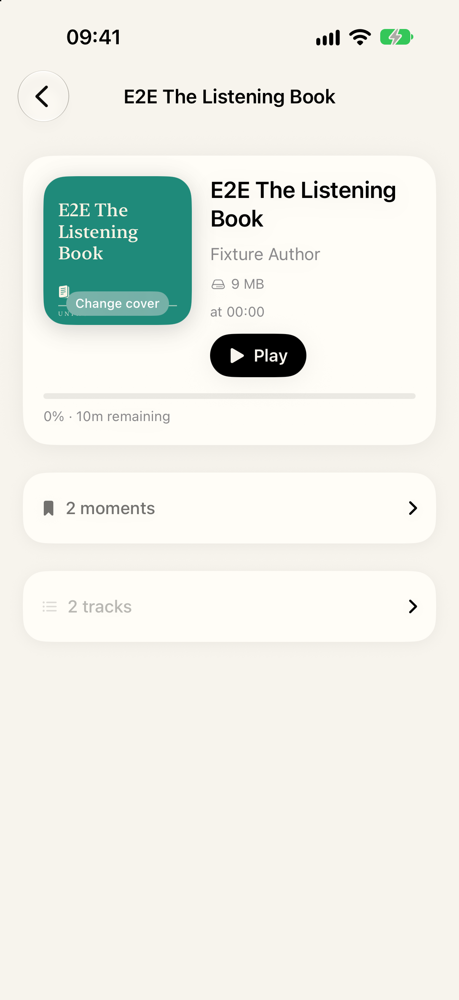
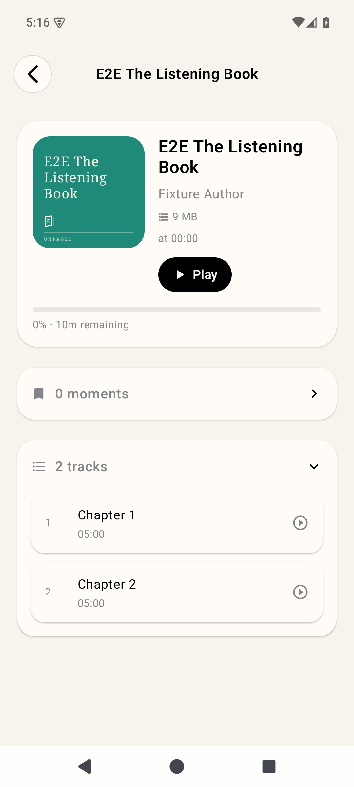

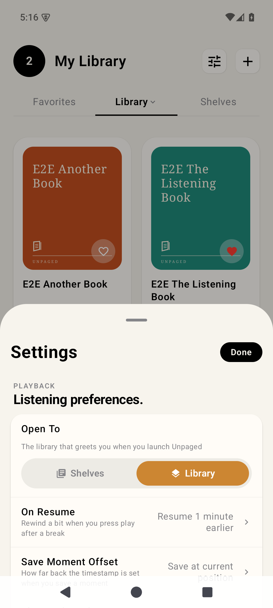


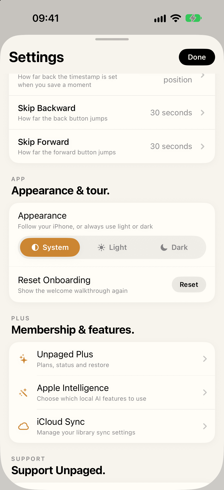
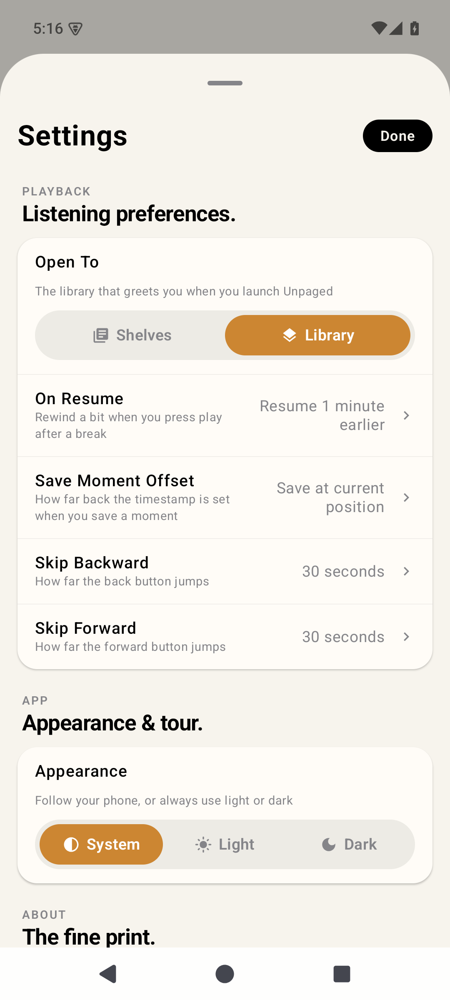

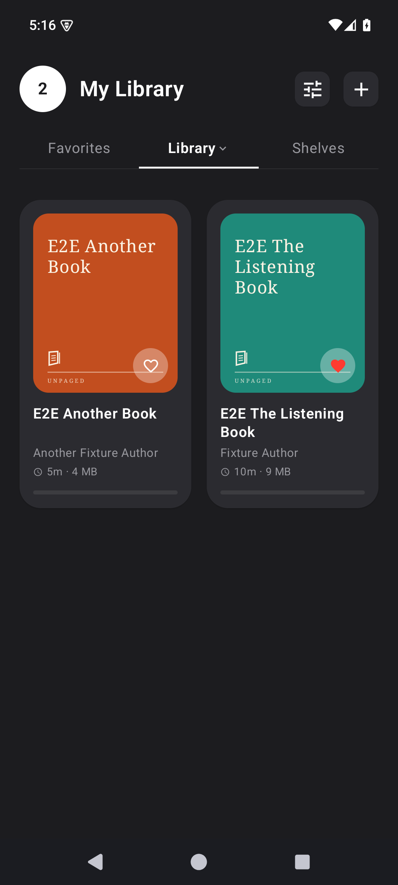
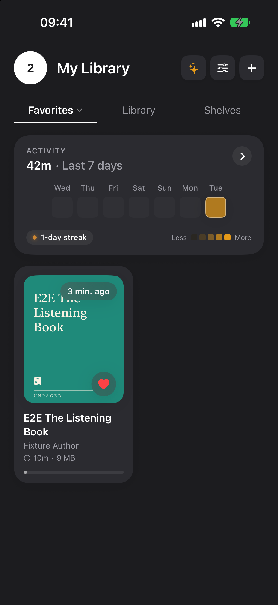
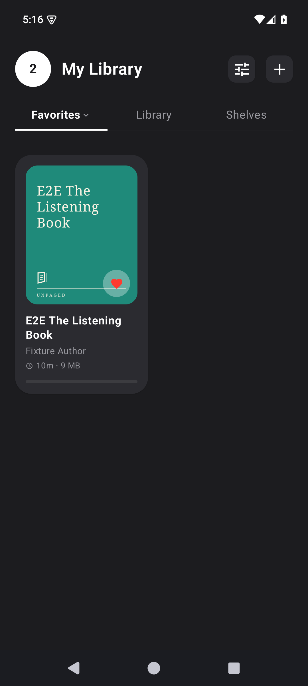

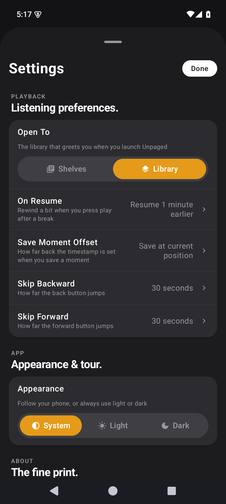
Supplied 26-detail-dark.png is identical to 21-library-dark.png and shows Library. A matching iOS dark-detail reference is unavailable; this pair is not a detail parity verification.
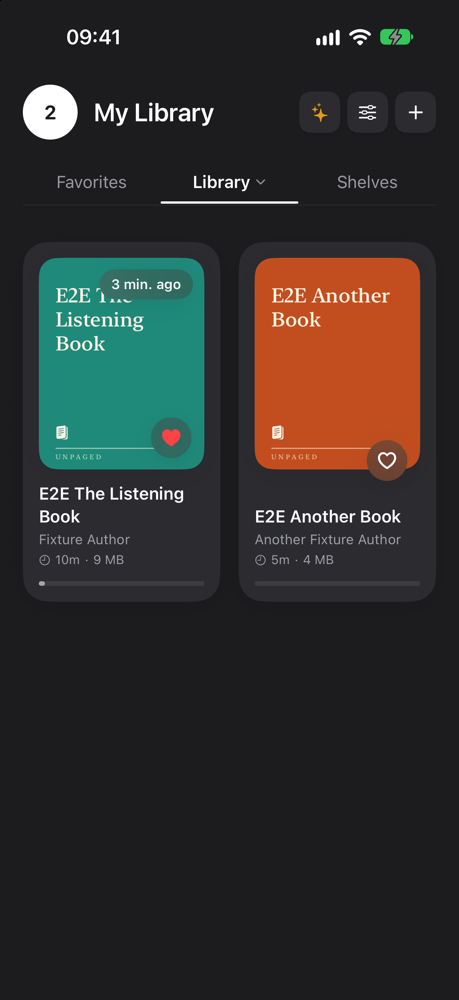
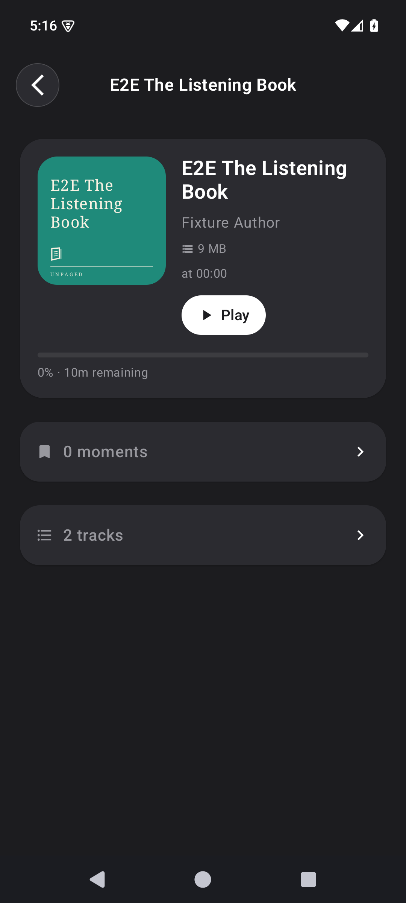